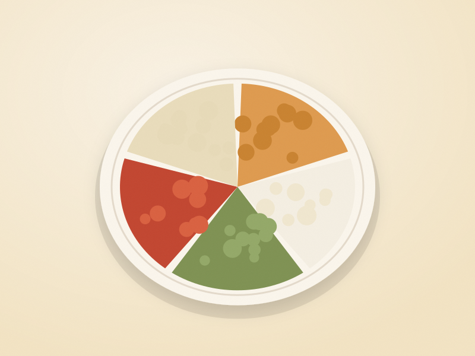
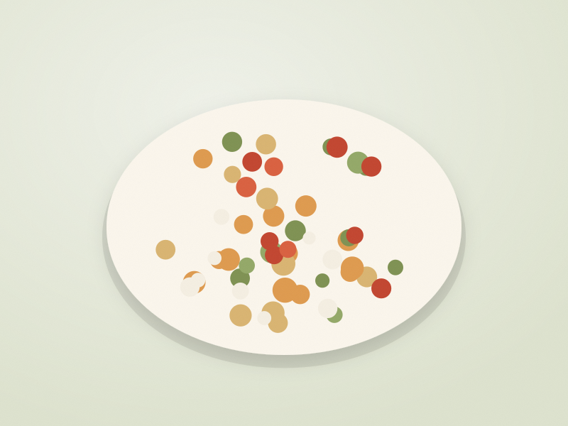

The 1,200
Kitchen
Small portions. Big flavour. Meals that actually satisfy.
A collection of portion-conscious recipes with the nutrition written on the front, not buried at the bottom. Build a day from them, work out what you actually need, and take the list to the shop.
Featured recipes
See all recipes →Build your day
Pick a breakfast, a lunch, a dinner and as many snacks as you want. The calories and macros add up as you go, and the site tells you what is left rather than making you work it out.
- Set a daily target, or keep the default of 1,200 kcal.
- Choose meals from the recipe library.
- See what you have left, and get suggestions that fit it.
- Send the whole day to your grocery list in one click.

What’s in your fridge?
Tick off what you already have. Every recipe is ranked by how much of it you can make right now, and you can hide anything that needs a shopping trip.
Useful on a Wednesday night when there is half a cucumber, some feta and no plan.
Find recipes →
Browse by category
About The 1,200 Kitchen
Food should be enjoyable, portions should feel realistic, and knowing what is in a meal shouldn’t mean giving up on flavour. Every recipe here uses ordinary ingredients, comes in a portion you can picture, and shows its calories and macros up front.
The 1,200 in the name is where the collection started. It is not a recommendation. What you need depends on your age, size, activity and a good deal else, which is what the calculator is for.
Small portions. Big flavour. Meals that actually satisfy.